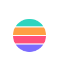
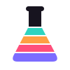
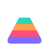
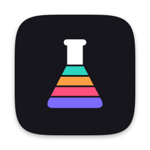
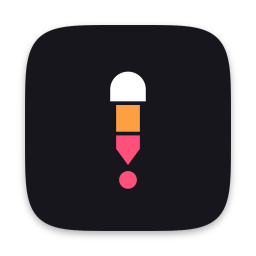
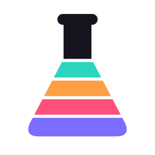
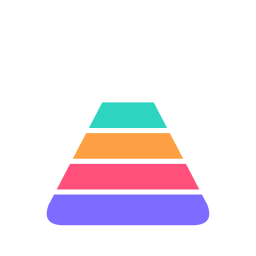
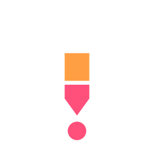

Design system 1.1.0 · 2026-11-22 · macOS + Windows
An Erlenmeyer flask filled with four bands (image, audio, video, docs) under a plain neck and rim. Use the small variant at 32 px and below, mono where the OS tints icons.

potion-mark.svg
potion-mark-on-light.svg
potion-mark-mono-white.svg
potion-mark-small.svg (≤32 px)macOS icons follow the 1024 grid (824 px rounded square, drop shadow). Windows icons are freestanding glyphs.

Potion · macOS
Dropper · macOS
Windows · light
Windows · dark
Dropper · darkThe four band colors identify file types and nothing else. Always pair the color with a glyph and visible text. On light surfaces use the darker text variant.
For custom-drawn surfaces (drop zone, tiles, onboarding, About). Window chrome and standard controls use system colors.
#0E0C14#17141F#211D2B#2E2939#8A849C| Text / status | Hex | vs surface |
|---|---|---|
| textPrimary | #FFFFFF | 18.16:1 |
| textSecondary | #B6B0C4 | 8.65:1 |
| textTertiary | #9A94A8 | 6.21:1 |
| success | #3DD68C | 9.68:1 |
| warning | #FFC53D | 11.51:1 |
| error | #FF6B6B | 6.54:1 |
#F7F6FA#FFFFFF#EFEDF3#E4E1EA#C9C4D3| Text / status | Hex | vs surface |
|---|---|---|
| textPrimary | #17141F | 18.16:1 |
| textSecondary | #4D475A | 8.88:1 |
| textTertiary | #6B6577 | 5.60:1 |
| success | #12804A | 4.99:1 |
| warning | #8F5F00 | 5.52:1 |
| error | #C62A2F | 5.57:1 |
System UI font in the apps (SF Pro / Segoe UI Variable). Space Grotesk is reserved for the wordmark and brand moments.
| Role | Sample | Size mac / win | macOS style | WinUI style |
|---|---|---|---|---|
brandDisplay | potion | 40 / 40 | — | — |
title | Convert 4 files | 17 / 20 | .title3 (semibold) | SubtitleTextBlockStyle |
sectionHeader | Output | 13 / 14 | .headline | BodyStrongTextBlockStyle |
body | Converted files are saved next to the originals. | 13 / 14 | .body | BodyTextBlockStyle |
secondary | MOV · 48.2 MB | 11 / 12 | .subheadline | CaptionTextBlockStyle |
caption | Last converted 2 min ago | 10 / 12 | .caption | CaptionTextBlockStyle |
formatBadge | MP4 | 10 / 11 | — | — |
fileName | Interview_final_v2_EXPORT.mov | 13 / 14 | — | — |
Custom 24 px stroke set in icons/category/. In the apps, prefer SF Symbols (macOS) and Segoe Fluent Icons (Windows); see docs/07-iconography.md.
Reference mockups in both themes. The blue primary button stands in for the system accent color.
Bands rise bottom to top, then the neck drops on. Use it in onboarding and the About window, not as a launch splash.